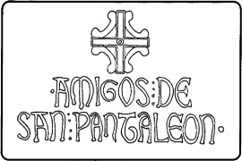

Nuestra asociación cuenta con los siguientes símbolos:
-
Una insignia, réplica a escala, de la cruz que remata la espadaña de la Ermita. Y nuestro sello, confeccionado con el mismo estilo de letra que figura en la inscripción de la consagración de la Ermita.
- 
-
El color morado, el cual se encuentra presente en nuestro estandarte y vestimenta. Escogemos este color en recuerdo de los lirios que florecían, en la Peña, junto a la Ermita.
-

Asociación de Amigos de San Pantaleón de Losa | 2012